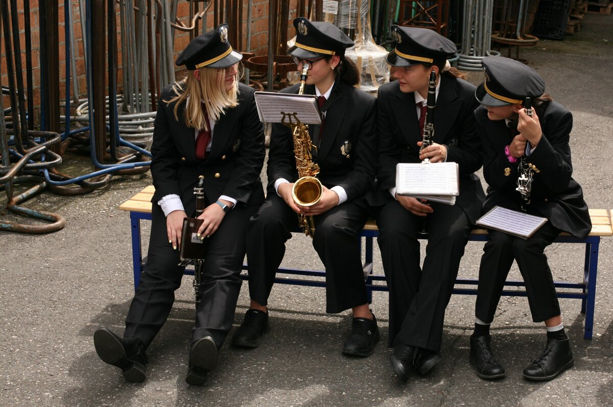

Un pomeriggio per conoscere gli insegnanti, ascoltare gli strumenti e scoprire i percorsi della Scuola Allievi. La sede della Filarmonica si trova in via don Invernizzi 31, nel rione di San Giovanni a Lecco.
La Scuola Allievi accoglie giovani e adulti interessati alla musica nella sede di San Giovanni.

Un pomeriggio per conoscere gli insegnanti, ascoltare gli strumenti e scoprire i percorsi della Scuola Allievi. La sede della Filarmonica si trova in via don Invernizzi 31, nel rione di San Giovanni a Lecco.